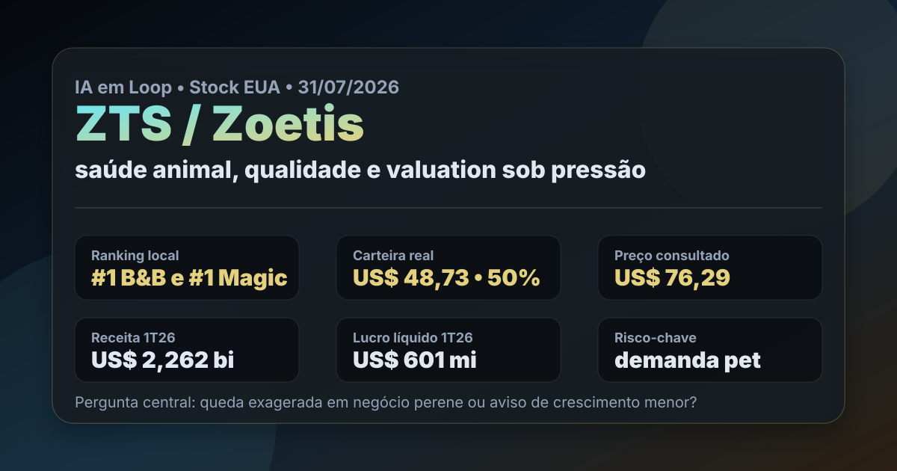

31/07: ZTS, Zoetis e o teste da saúde animal
ZTS, Zoetis, aparece em primeiro lugar nos dois rankings dolarizados do IA em Loop e já é a maior posição da carteira BESST & Buffett Dolarizada. A pergunta central é direta: o mercado exagerou ao derrubar uma líder de saúde animal ou está avisando que o crescimento em pets ficou menos previsível?

ZTS une posição real, ranking quantitativo forte e um setor estruturalmente defensável. O contraponto é que a queda de preço veio acompanhada de sinais de demanda mais fraca no mercado pet.
Resposta curta: qualidade clara, mas o preço caiu por motivo
Zoetis é uma empresa global de saúde animal, com medicamentos, vacinas, diagnósticos e produtos para animais de companhia e pecuária. No arquivo local de rankings com data-base de 11/07/2026, ZTS aparece em 1º lugar no BESST & Buffett EUA, com score de 61,5, P/L de 12,39, EV/EBITDA de 9,57, ROE de 67,75% e dividend yield de 2,81%.
A mesma ação também aparece em 1º lugar na Magic Formula EUA, com earnings yield de 8,07%. Essa dupla presença é rara e relevante: qualidade, preço relativo e perenidade parecem convergir. Mas a leitura não pode parar no ranking. A cotação consultada em 31/07/2026 ficou perto de US$ 76,29, contra máxima de 52 semanas de US$ 160,48, queda aproximada de 52% frente ao topo.
Queda desse tamanho em uma empresa historicamente premium pode criar oportunidade, mas também pode sinalizar que o mercado está revisando crescimento, margem ou previsibilidade. O trabalho é separar barganha de armadilha de valor.
O que os dados verificados mostram
A consulta pública à SEC no CIK 0001555280 mostra que, no 10-Q arquivado em 07/05/2026, referente ao 1T26, a Zoetis registrou US$ 2,262 bilhões de receita, US$ 601 milhões de lucro líquido e US$ 401 milhões de caixa operacional. O capex no mesmo recorte foi de US$ 110 milhões.
No balanço de 31/03/2026, a companhia tinha US$ 15,154 bilhões em ativos e US$ 3,233 bilhões de patrimônio líquido. Em 2025, a SEC registra US$ 9,467 bilhões de receita anual, US$ 2,673 bilhões de lucro líquido e US$ 2,904 bilhões de caixa operacional. Isso confirma escala, rentabilidade e geração de caixa relevantes.
O ponto frágil não é a existência do negócio. O ponto frágil é o ritmo. Notícias públicas recentes trouxeram leitura de resultados abaixo do esperado no 1T26 e revisão de expectativas por demanda mais fraca em animais de companhia nos EUA. Isso explica por que uma empresa boa pode negociar com múltiplo mais baixo.
| Métrica verificada | Fonte/período | Valor | Leitura |
|---|---|---|---|
| Receita | SEC 10-Q 1T26 | US$ 2,262 bi | escala global preservada |
| Lucro líquido | SEC 10-Q 1T26 | US$ 601 mi | rentabilidade ainda forte |
| Caixa operacional | SEC 10-Q 1T26 | US$ 401 mi | gera caixa, mas trimestre foi menor que o anualizado histórico |
| Capex | SEC 10-Q 1T26 | US$ 110 mi | investimento físico controlável |
| Receita anual | SEC 10-K 2025 | US$ 9,467 bi | base grande para recomposição |
Por que ZTS importa para a carteira
Na carteira real BESST & Buffett Dolarizada registrada em 16/07/2026, ZTS aparece com US$ 48,73, 0,65507173 ação, preço médio de US$ 74,3888 e peso de 50,0%. É uma posição pequena em valor absoluto, mas grande dentro da carteira recém-iniciada. Por isso, a análise precisa ser mais rigorosa do que uma simples confirmação do ranking.
A tese pró-Zoetis é intuitiva: donos de pets tendem a gastar com saúde animal, pecuária precisa de produtividade sanitária e marcas de medicamentos veterinários podem ter poder de preço. A tese contra também é objetiva: se a demanda em clínicas e produtos para animais de companhia desacelera, a empresa perde parte do prêmio de previsibilidade.
ZTS é um caso de qualidade em queda forte, não uma compra automática. A posição real faz sentido como aprendizado em saúde animal, mas reforço só ficaria mais confortável se os próximos resultados mostrarem estabilização da demanda pet, preservação de margem e caixa operacional voltando a ganhar tração.
O que favorece e o que ameaça a tese
Favoráveis
• Liderança global em saúde animal, nicho menos comoditizado.
• Dupla presença no topo dos rankings dolarizados locais.
• Receita anual de quase US$ 9,5 bilhões em 2025.
• ROE alto e múltiplos menores que o padrão histórico de empresa premium.
• Exposição diferente de tecnologia, bancos e seguradoras.
Desfavoráveis
• Queda de mais de 50% frente ao topo de 52 semanas exige respeito.
• Demanda em pets pode estar mais fraca do que o mercado esperava.
• Revisões de expectativa podem pressionar múltiplos por mais tempo.
• Peso de 50% na carteira BESST & Buffett Dolarizada aumenta risco de concentração.
• Ranking quantitativo não capta sozinho ciclo de clínicas, estoques e mix de produtos.
Checklist para acompanhar daqui em diante
| Ponto | O que monitorar | Se piorar |
|---|---|---|
| Demanda pet | volumes e crescimento em animais de companhia | queda pode ser repricing estrutural, não exagero |
| Margem | preço, mix e custo de produção | qualidade do negócio fica menos evidente |
| Caixa | conversão de lucro em caixa operacional | ranking perde força prática |
| Guidance | próximas revisões de receita e lucro | mercado pode continuar cortando múltiplo |
| Concentração | peso de ZTS dentro da carteira dolarizada | reforço aumenta dependência de uma única tese |
Conclusão
ZTS é uma das melhores pautas educacionais da carteira dolarizada porque combina três elementos úteis: empresa de qualidade, posição real e queda grande de preço. A resposta para a pergunta do post é equilibrada: a queda pode ter exagero, mas não é sem fundamento. O mercado está cobrando prova de que a saúde animal continua crescendo com previsibilidade.
A leitura de hoje é: ZTS merece acompanhamento prioritário como posição real de qualidade, mas o gatilho não é o ranking isolado; é a confirmação de demanda, margem e caixa nos próximos trimestres. Se a desaceleração for transitória, o valuation atual pode ficar interessante. Se a fraqueza persistir, a empresa continua boa, mas talvez não tão barata quanto parece.